Фильм-эпитафия о Михаиле Горшенёве
Друзья и коллеги-музыканты вспоминают феномен КиШ и его движущей силы Михаила Горшенёва!
Фильм стал моей дипломной работой по режиссуре в СПГУКиТ
Я на этом проекте:
Режиссёр
Режиссёр монтажа
Разработка драматургического решения фильма
Вошёл в проект изначально какрежиссёр монтажапосле съёмок большинства интервью. Исследовал материал(12 часов интервью), длясоздания цельности фильмаинициировал дополнительные съёмки, и уже в своём концепте перешёл на роль режиссёра.Фильм доступен в интернете по запросу в яндексе
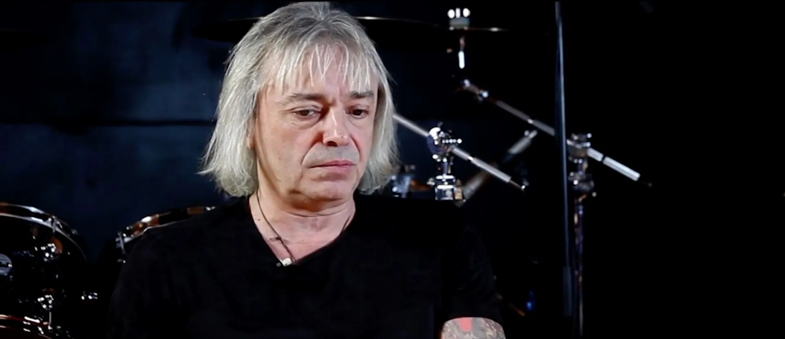
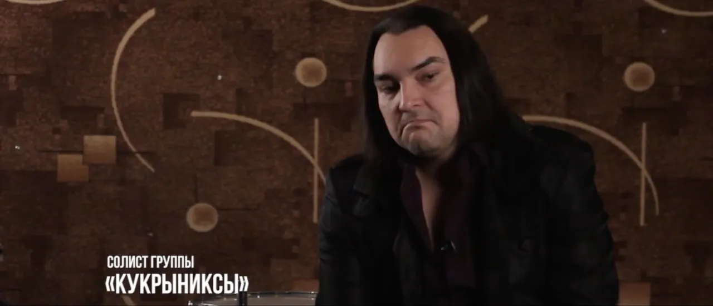
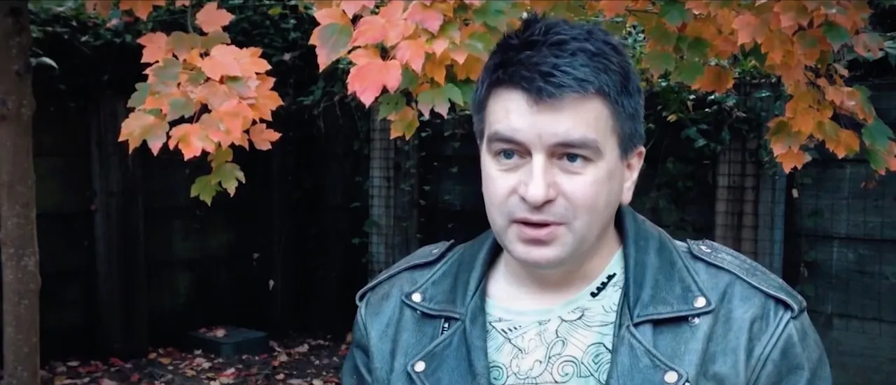
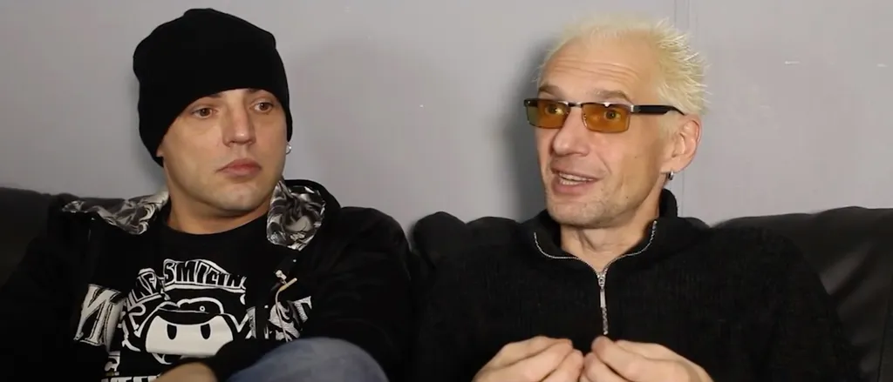
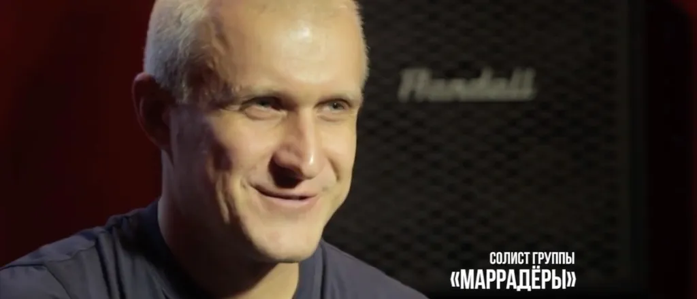
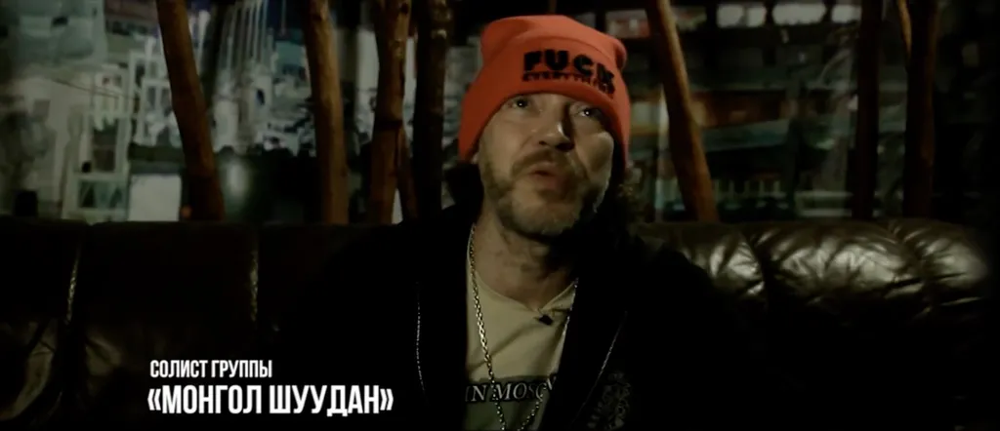
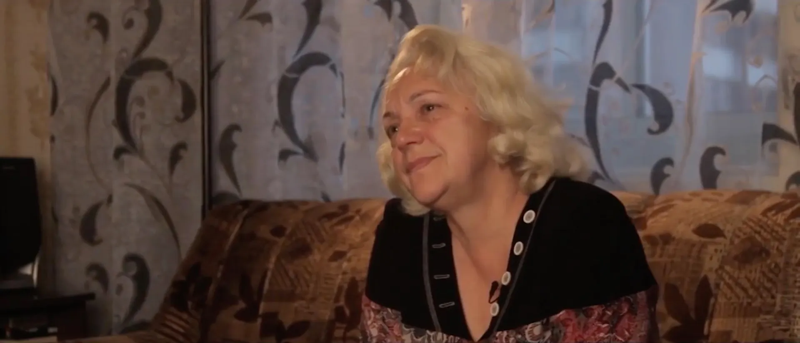
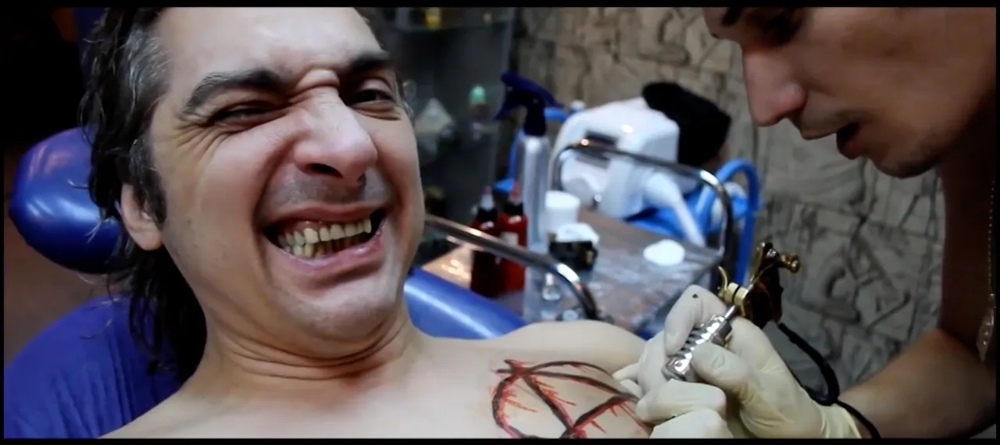
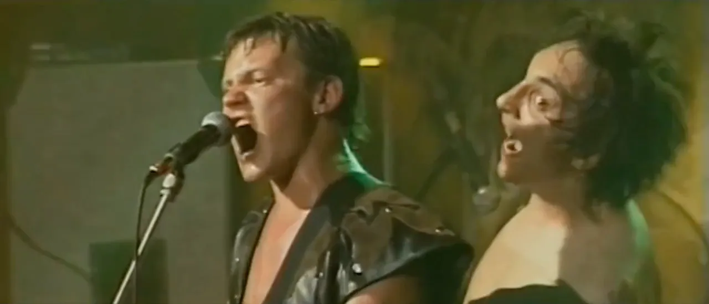
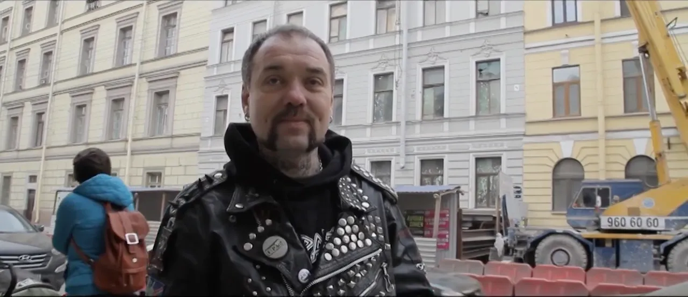
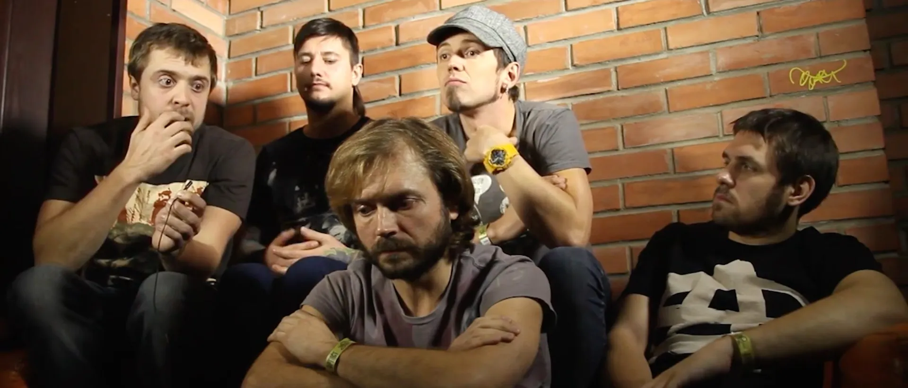
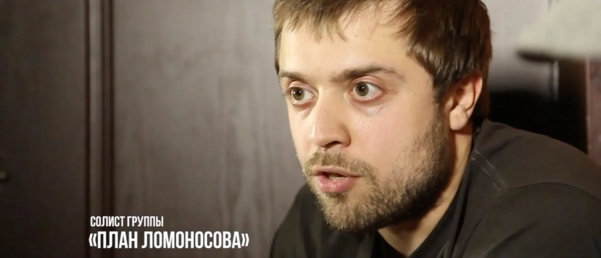
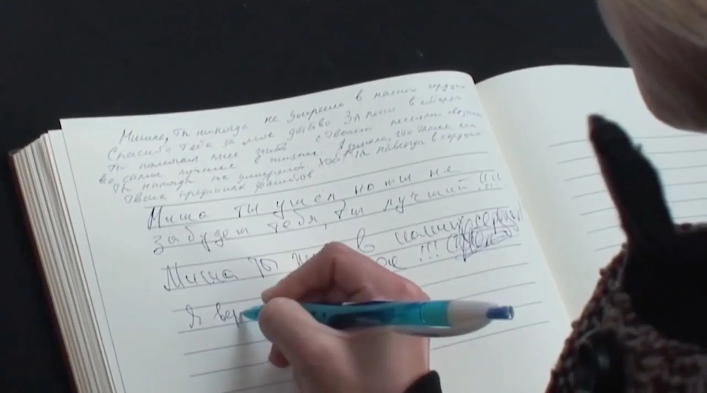
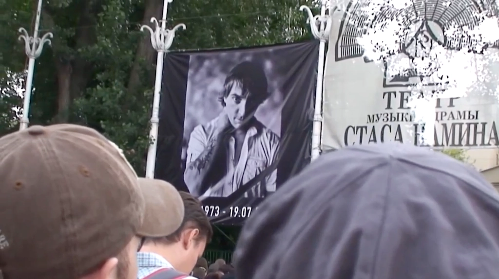
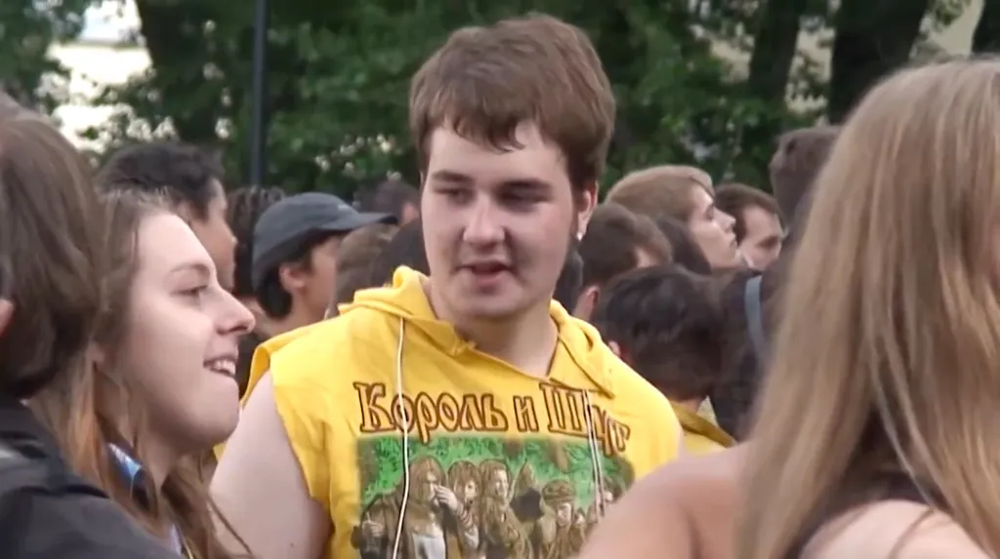
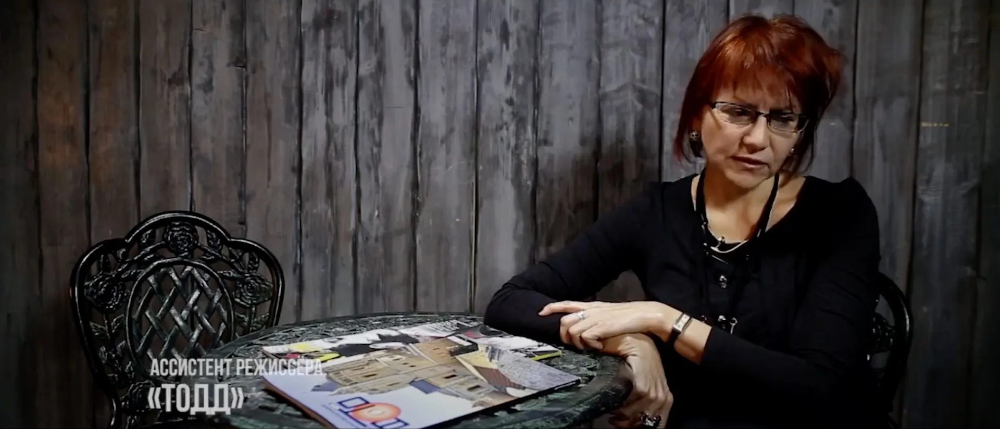
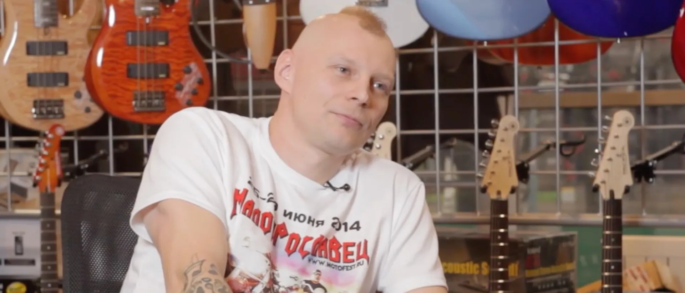
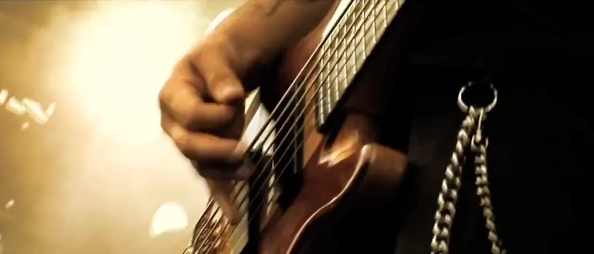
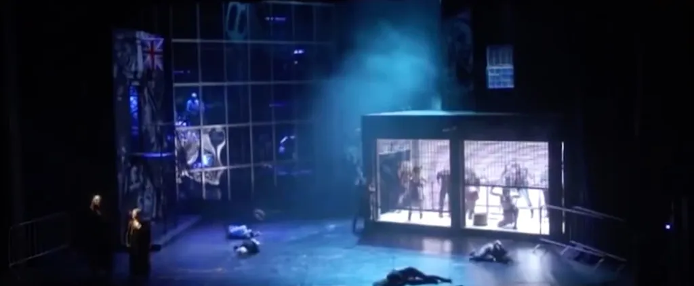
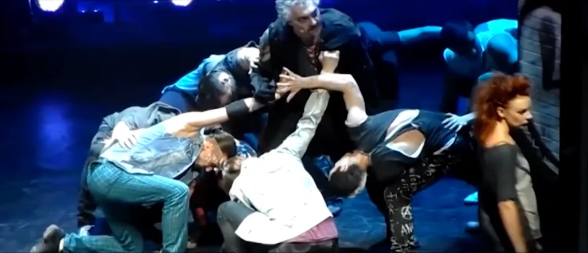
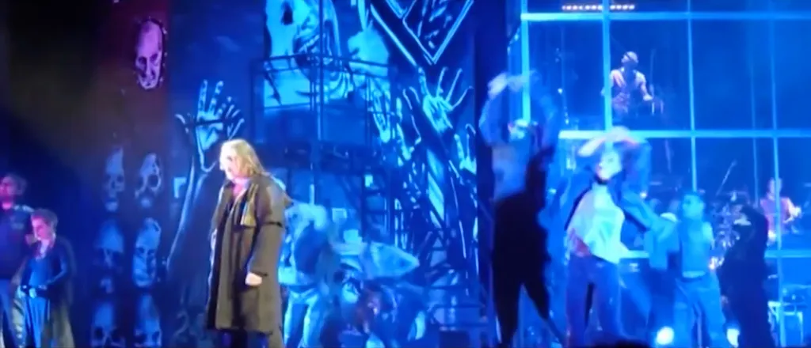
Основные роли в работе над фильмом
Продюсер:Михаил Мирого
Операторы:Роман Бобров,Семён Бухтояров
Интервьюер:Михаил Мирого
Голос за кадром:Дмитрий Заитов